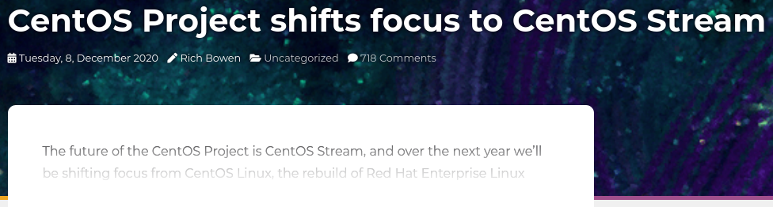

The Tragedy of the Community Enterprise Linux Distribution
who -u
Dan Čermák
| Software Developer @SUSE, SLE BCI releng | |
| i3 SIG, Package maintainer | |
| Developer Tools, Testing and Documentation, Home Automation | |
| https://dancermak.name | |
| dcermak | |
| @Defolos@mastodon.social |
The Tragedy
Tragedy is a genre of drama based on human suffering and,
mainly, the terrible or sorrowful events that
befall a main character.
Traditionally, the intention of tragedy is to invoke an
accompanying catharsis, or a "pain [that] awakens
pleasure,” for the audience.
The Tragedies?

Or this one?
The Tragedy of Leap
- Binary compatible to SLES now
- very small contributor community
What is success?
- many users?
- many contributors?
- long term survival/sustainability?
Who's successful?
Stakeholders
What do users want?
- LTS
- predictability
- not too old code base
Why do people contribute?

Contribution paths

Community first path

SIGs
- groups empowered to drive (sub-)projects
- path for "externals" to drive innovation
Steering Committee
- decide on high level technical changes
- can support smaller contributors
- can gatekeep
Rebuilding

Documentation
- crucial for everyone
Foundation
- ensure independence of a project
- must be truly independent
What about Debian?

- predictable release cadence
- technical steering committee
- easy rebuild via debootstrap + all tooling in the distro
- being first helps
TODO Alma

- independent foundation
- "playground" on CentOS Stream base
- own build system + devtools
TODO And Rocky?
- old CentOS 2.0
- all backed by CIQ
Catharsis
- Leap is in principle a good thing (for some)
- CentOS stream is in principle a good thing too
- allow for rebuilds outside of OBS (→
pbuild) - stick to a schedule & way
- clear communication